|
|
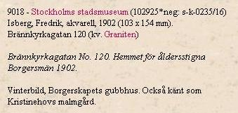
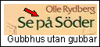
|
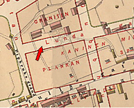
1885
|
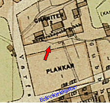
1902
|
Ur Stockholmsliv, Staffan Tjerneld, 1950
 Nutid 2003 Nutid 2003
Gubbhusets domäner omfattade nära
tjugofem tunnland. Det mesta var backar och berg, Gubbhusbergen, som denna fortsättning av Skinnarviksbergen kallades. I hörnet mot Pipbruksgränd, Varvsgatans föregångare, låg en vacker
trädgård. Trakten vann knappast i skönhet, när sedermera kvarteret Plankan rutades upp över
trädgårdsgångarna och fruktträden efterträddes av nutidens plåtskjul och virkesupplag. Själva
mangården, Kristinehov, finns fortfarande kvar under adress Lundagatan 58.
|
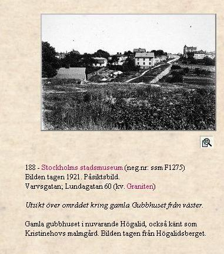
|
|
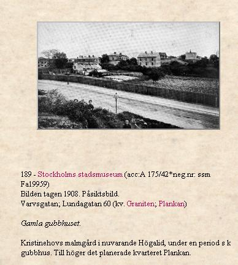
|
I äldre tider bestod området av flera smärre tomter och gårdar. 1789 inköptes egendomen av
brukspatronen Georg Fr. Diedrichson och efter dennes död började gårdens era som
välfärdsinrättning. Brukspatronen, som var en av direktörerna i Borgerskapets gubbhus och redan
tidigare skänkt pengar till den då ganska fattiga institutionen testamenterade nämligen 1806 sin
malmgård till Gubbhuset. Genom tillmötesgående från fru Diedrichson kunde pensionärerna börja
flytta in på Kristinehov redan 1812, medan ombyggnader och nyinredningar ännu pågick. Fyra år
senare stod Gubbhuset helt klart, och därmed var en lång och bekymmersam lokalfråga ur världen
eftersom de första planerna på ett Borgerskapets gubbhus gick tillbaka till 1772.
|
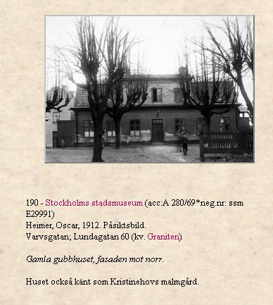
|
|
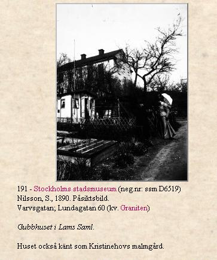
|
|
1816 hade Gubbhuset trettiosex pensionärer, eller, för att citera det kungliga reglementet av år 1788,
sådana »åldrige, avsigkomne och vanföre borgare, som i sina förra år deltagit i denna stads borgerskaps tunga». Smärre förändringar och ombyggnader på gården gjorde det möjligt att successivt öka
antalet understödstagare. Finanserna klarades med donationer. 1853 beräknades underhållet för var
och en av de femtiotre pensionärerna till 143 riksdaler 35 skillingar 11 i runstycken per år, och då är
att märka, att direktionen tio år tidigare beslutat att icke tillåta »någon av de å Gubbhuset till
vård och underhåll intagna, att annorledes än i matsalarna vid där anrättade bord erhålla spisning
middagar och aftnar, ävensom att den tilldelade maten icke får från stället bortbäras».
|
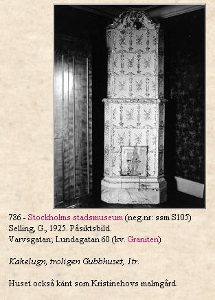
|
|
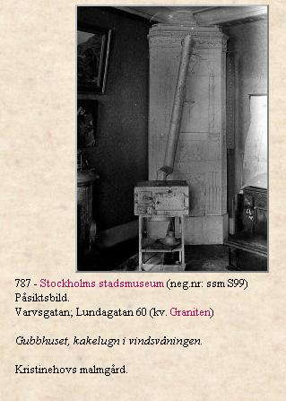
|
|
Den enda
större tillbyggnaden vid gamla Gubbhuset skedde 1868, då man byggde en (numera riven)
flygelbyggnad, som innehöll tio rum. Mot slutet av seklet höjdes emellertid röster för att stiftelsens
anläggningar skulle svara bättre mot den nya tidens krav. Ekonomiskt såg man sig i stånd härtill
efter en större marköverlåtelse till staden 1895 i samband med nyreglering av stadsplanen, och 1901
förelåg Gustaf Wickmans ritningar till det nya Gubbhuset eller Borgarhemmet, som anläggningen vid Högalidsgatan 28 kallas.
|
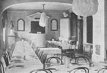
Matsalen på gamla Gubbhuset användes även för andakter och hade en liten predikstol på ena kortväggen.
|
|
Planeringsarbetet tog ganska lång tid, först fyra år senare
började byggnaden uppföras för att stå färdig i oktober 1908. Inte minst det dominerande läget gjorde
att byggnadsarbetet följdes med stort intresse, och inför invigningen hade dagspressen långa
illustrerade artiklar om »det präktiga och solida palatset». Man beundrade utsikten, inredningen,
kyrksalen på nedre botten samt inte minst den elektriska hissen, värmeelementen i rummen samt
»bekvämlighetsinrättningar med vattenklosetter».
|
|
En stor del av den gamla Kristinehovstomten stannade kvar i Gubbhusets ägo och skulle ge mera
pengar. I december 1907 såldes huvudparten för 635 000 kronor till ett konsortium under ledning av
byggmästaren vid det nya gubbhusbygget, varefter köparna några veckor senare avyttrade marken för
1 100 000 kronor. Även i tomtjobberiets förlovade tid ansågs en vinst på nära halva miljonen vara
respektabel. Transaktioner som dessa fordrade givetvis stor avkastning av den kommande
bebyggelsen för att tomterna skulle bli räntabla.
|
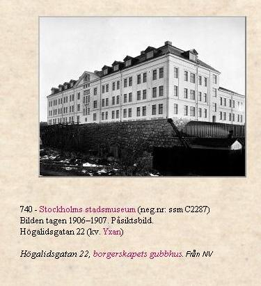
Nutid 2003
|
|
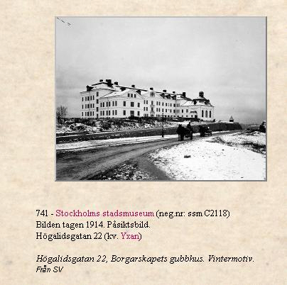
Nutid 2003
|
|
|
På sluttningen ned mot Riddarfjärden byggdes de
mäktiga
hyreskomplex som flankerar Borgarhemmet och höjer det till en högre estetisk dignitet. Det var dylika
tegelkolosser som föreslogs i en stadsplan för Söder Mälarstrand nedanför Heleneborgsområdet och
1908 inspirerade arkitekten Wilhelm Klemming till en temperamentsfull artikel, där han protesterade
mot stadsplanerarnas fantasilösa användande av linjaler och vinkelhakar och totala brist på känsla
för topografins naturliga förutsättningar. »Den väsentliga skillnaden mellan det östra och västra Söder
kommer - så ser det ut - att bestå däri, att på östra sidan byggdes kyrkan först och skandalhuset
sedan och på västra blir det tvärtom.»
I stället för hyreskaserner rekommenderade Wilhelm Klemming det anglosachsiska systemet med
enfamiljshus, men tiden var ännu inte mogen för moderna privatvillor på Söderbergen. Ett tiotal år
senare beslöt staden emellertid anlägga Skinnarviksringen, som skulle bli Söders Lärkstad. Området
var ganska litet och berörde blott tretton tomter, vilka emellertid omedelbart fann köpare, lockade av
det fria läget och den förnämliga utsikten pver Riddarfjärden. Till följd av kristiden stod tomterna
obebyggda några år, men 1921 blev det första huset färdigt.
|
|
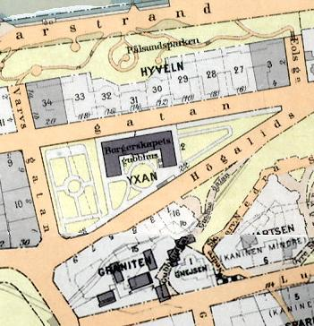
1922
|
Ytterligare ett tiotal år senare - 1931 - gjorde funkisarkitekturen sin markanta entre på Söder, när
kvarteret Marmorn ovanför Skinnarviksringen fick sitt av Sven Wallander ritade HSB-komplex. De
oändliga balkongraderna tävlar nu med Högalidskyrkan om att vara ett av de mest karakteristiska
inslagen i vyn över västra Södermalm.
|
|